Гемплей
Гемплей Snowrunner має більше 40 різних авто, багато різновидів причепів та обладнання для кожної автівки. Окрім сюжету ви можете виконувати контракти, доручення та проходити змагання на час. За проходження додаткових завданнь ви отримуєте гроші та досвід. Існує 3 локації та в кожнії з них по 4 мапи між якими можна мандрувати. Про те якщо докупити сезонні доповнення то кількість локацій збільшиться При бажанні можна встановлювати модифікації з сайту, що напряму підв'язується до гри при реєстрації. Та будуть завантажені при запуску гри.
Пошкодження техніки В ході виконнаня завдань ви можете через необережне кермування пошкодити авто, їдучи через схили чи гочи це може зробити каміння, а через болота та багно впавші дерева. Кожне пошкодження уповільнюе чи погіршує кермування вантажівкою чи авто. Від пробиття баку ви швидко втратите паливо, пошкодження двигуна знизить його роботу та призведе до збільшеного споживання палива чи пошкодження, пошкодженна трансмісія погіршить прохідність, а пробите колесо допоможе застрягнути чи отримати важкокеровану вантажівку.
На початку гри ви будете мати ці два автомобіля. За допомогою їх ви зможете виконати перші завдання та знайти гараж.
Далі ви можете в залежності від вашого рівня їх модифікувати або, якщо в вас вистачає грошей, купити собі нові. Можна купувати ті автомобілі які є у грі або ставити свої. В залежності від типу техніки та характеристик ви можете перевзити ті чи інші вантажі швидко чи довго. Також гра має евакуацію на ті випадки коли машина застрягла,перевернута має критичні пошкодження чи немає палива.
 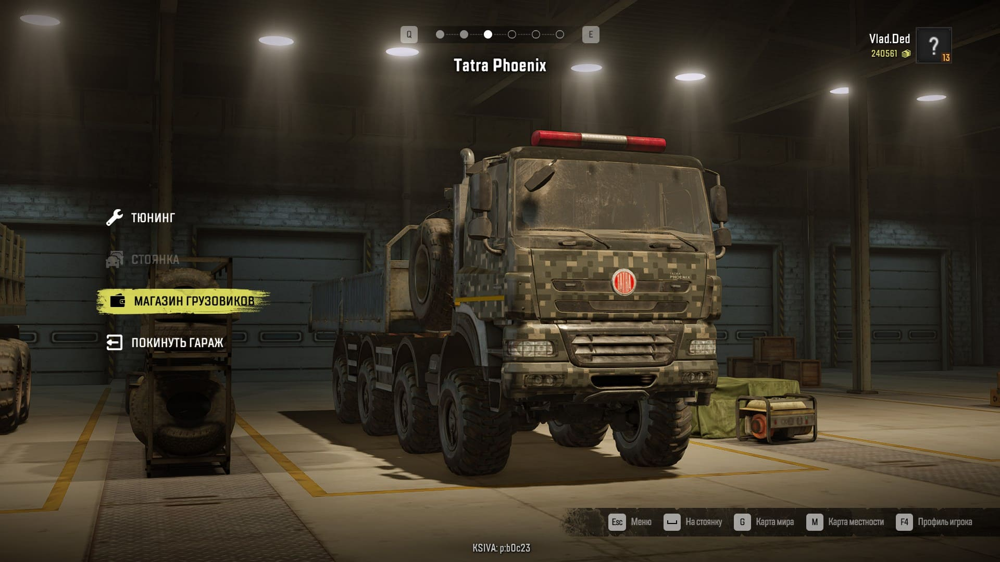
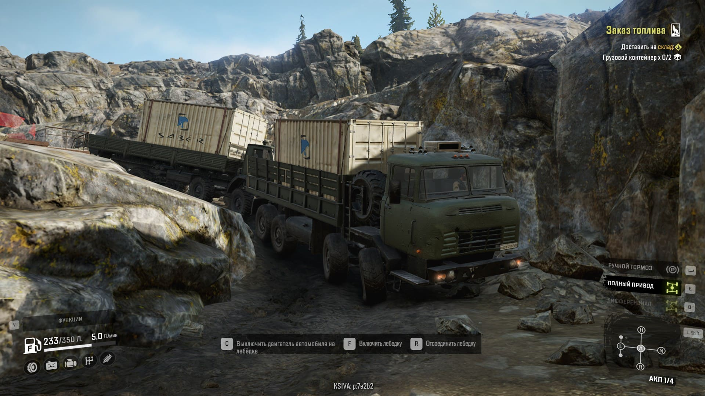
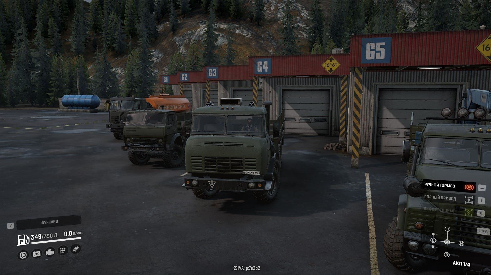
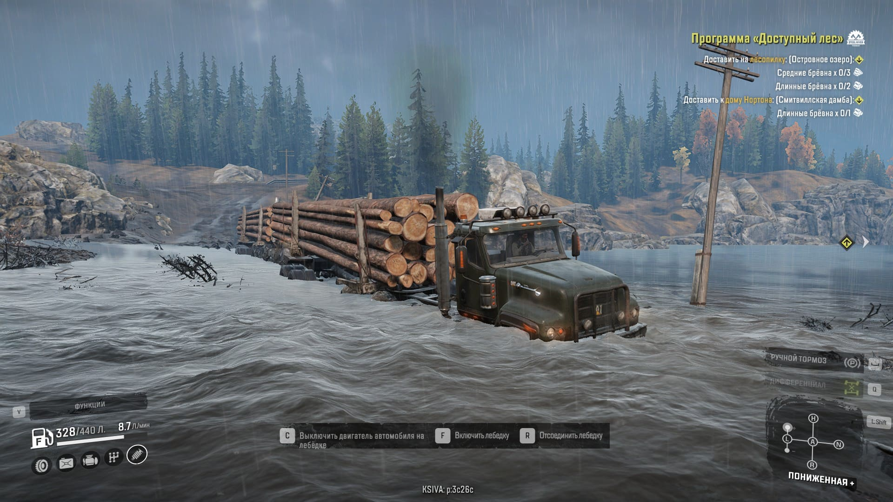
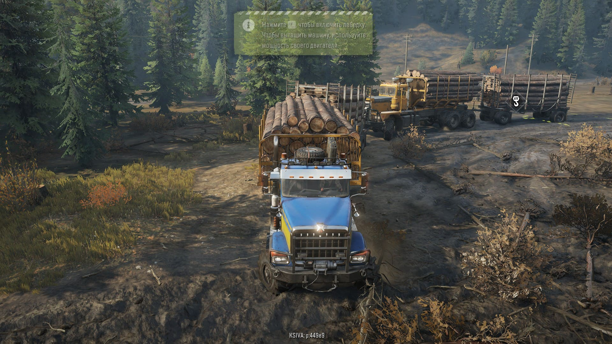
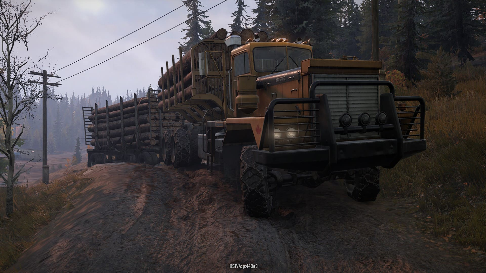
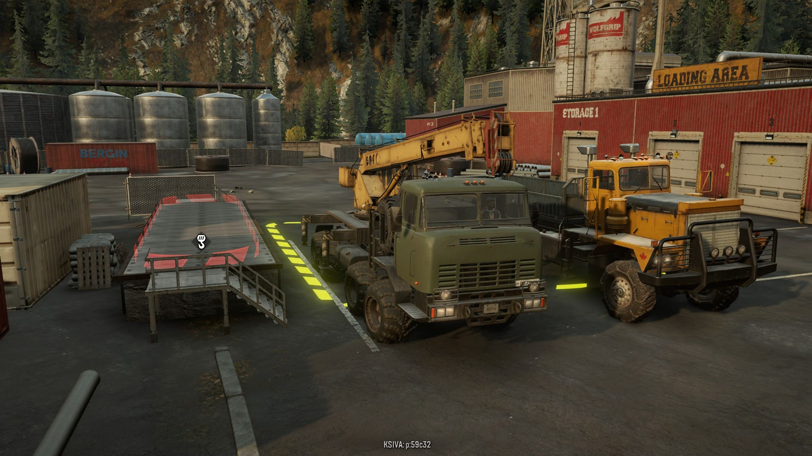
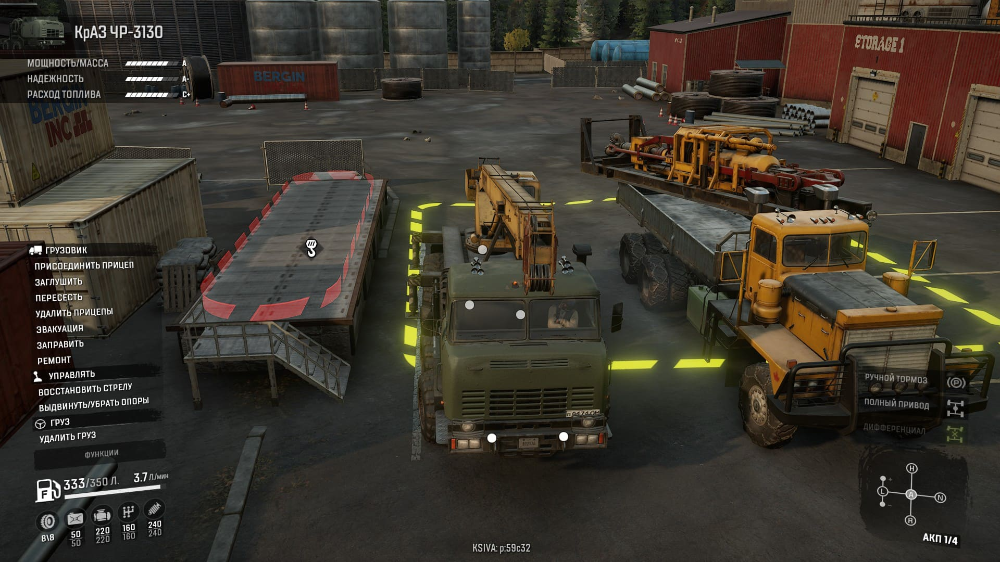
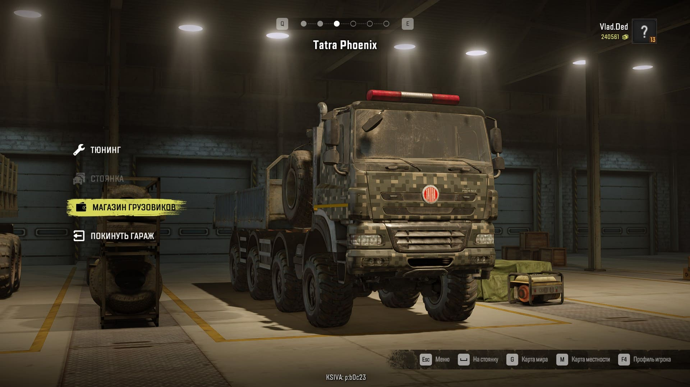
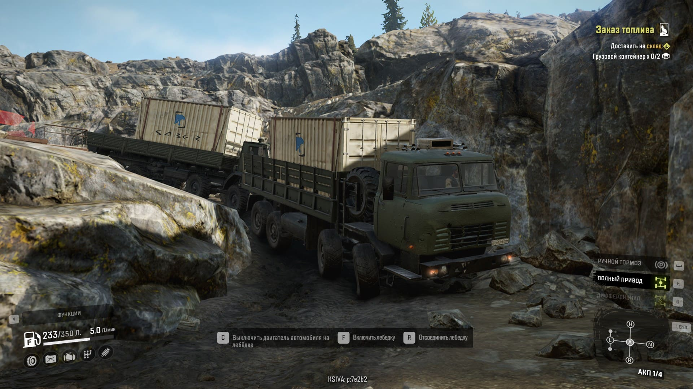
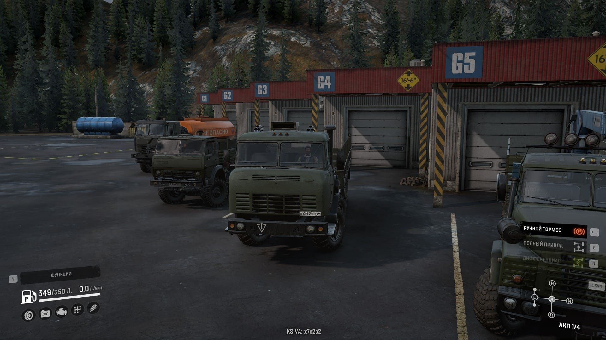
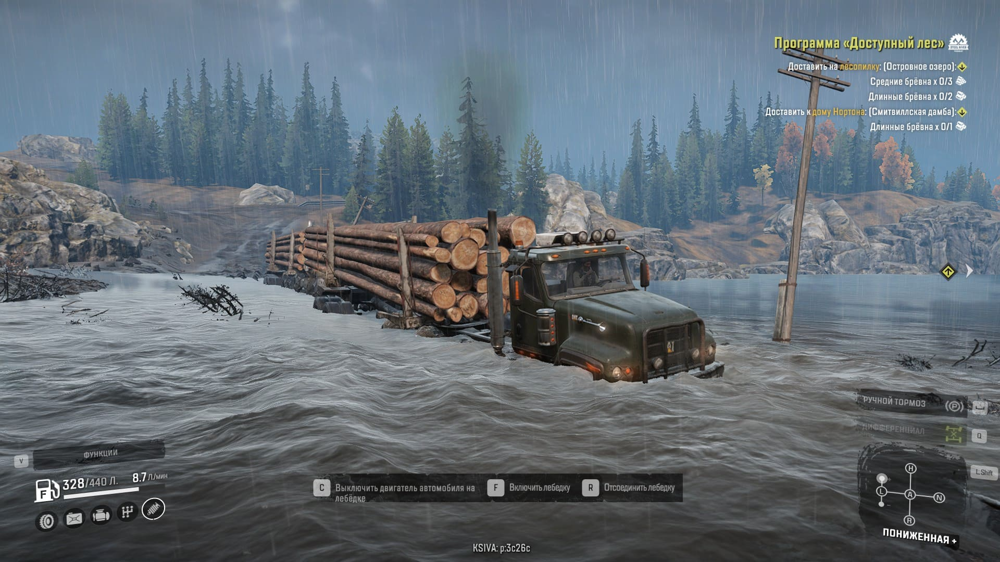
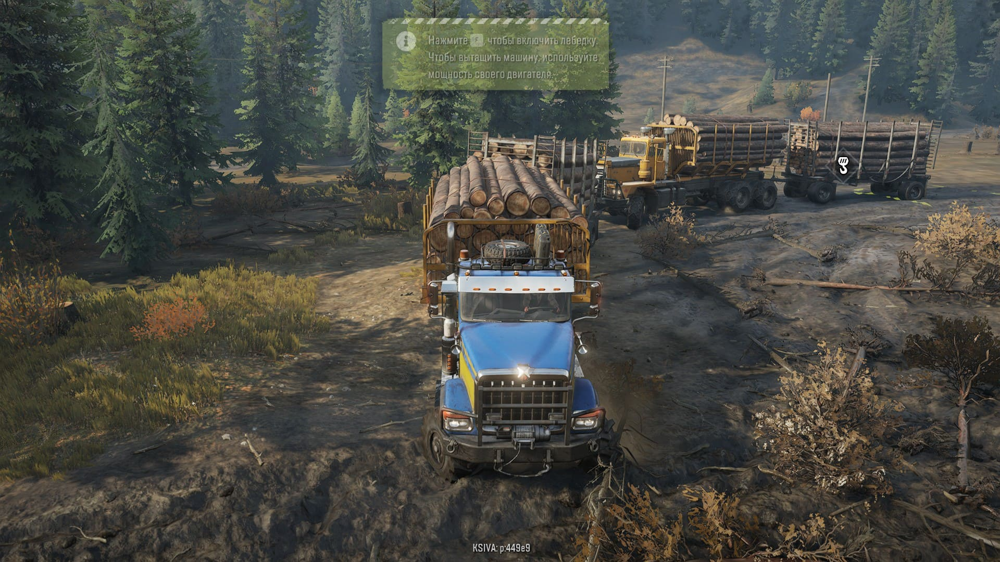
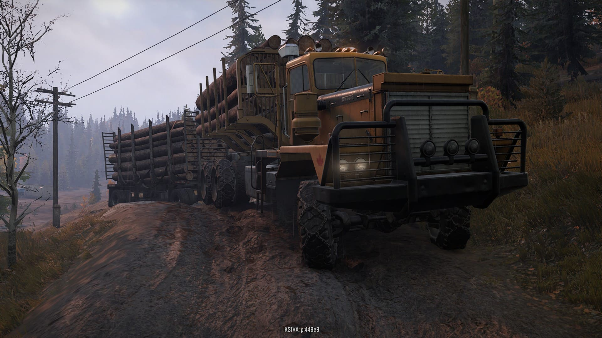
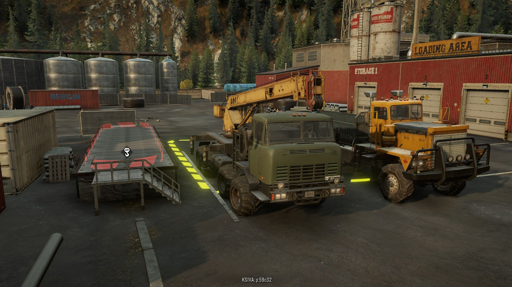
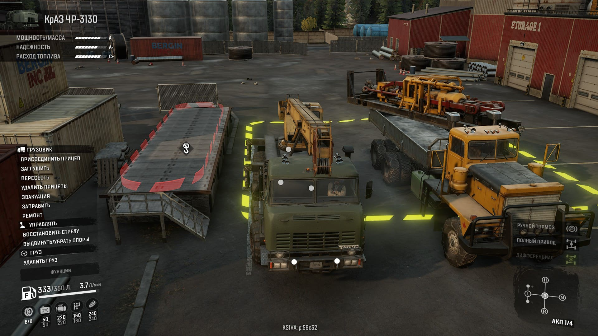
Ситема пошкоджень виглядає так:
Для того щоб відремонтувати техніку можна скористатися такими встановленими модулями на іншу техніку.